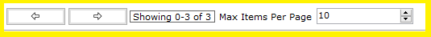

|

|
A navigation bar is always shown along with a list of data items in the application whether its the list of licenses, drives, filters, encryption keys, sync items , sync containers etc.
It has three main controls tied to it, namely
-
Back Arrow - allows users to go to the previous page of data items from the list of data items. For example if you are seeing 20 - 30 items of 50 items in total with max items set to 10 per then
clicking on the back arrow will show 10 - 20 items out of 50 items.
-
Forward Arrow - allows users to go to the next page of data items from the list of data items. For example if you are seeing 20 - 30 items of 50 items in total with max items set to 10 per then
clicking on the forward arrow will show 30 - 40 items out of 50 items.
-
Max Items Per Page - allows users to set the number of items that would show at once in a page from the list of data items. default value is 10 items.
|